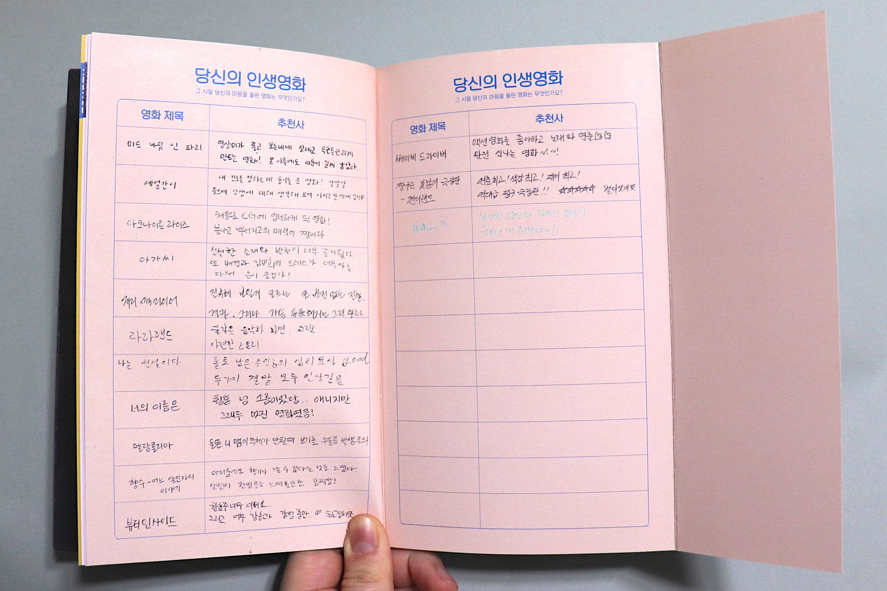
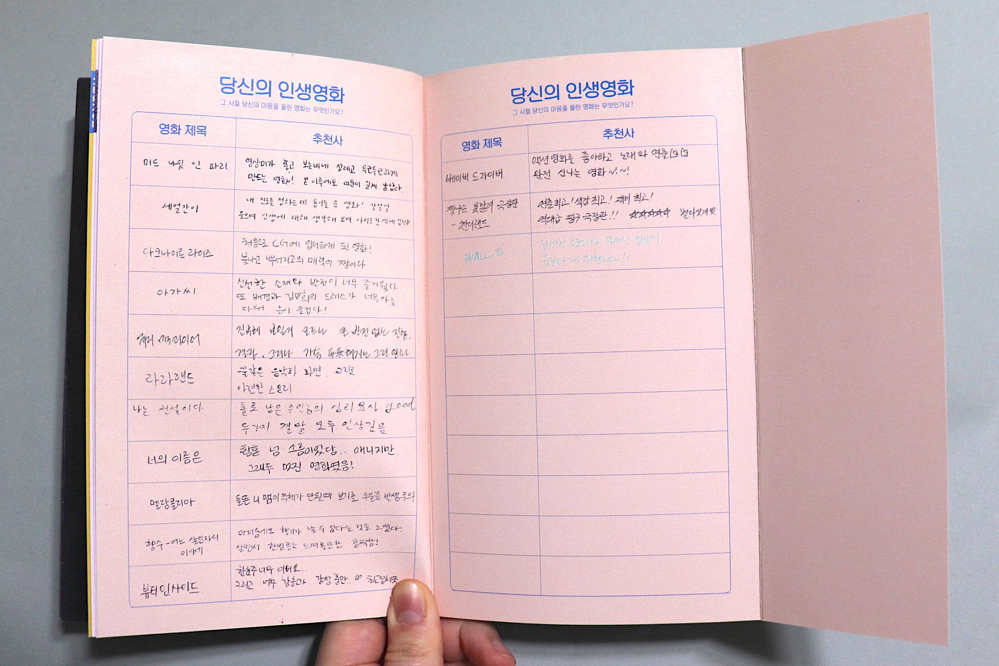

가장 보통의 나
The most truthful me
Editorial design
2017 Dec
가장 보통의 나를 관찰한 책을 제작하였다. 틈만 나면 나는 장르를 불문하고 다양한 영화를 감상한다. 장르별로 나의 감상평, 감상하는 모습 등을 관찰하여 여러 방법으로 기록하였다.
Whenever I have free time, I watch a variety of movies, regardless of genre. I observed and recorded my appreciation reviewing figure in various ways.


 
